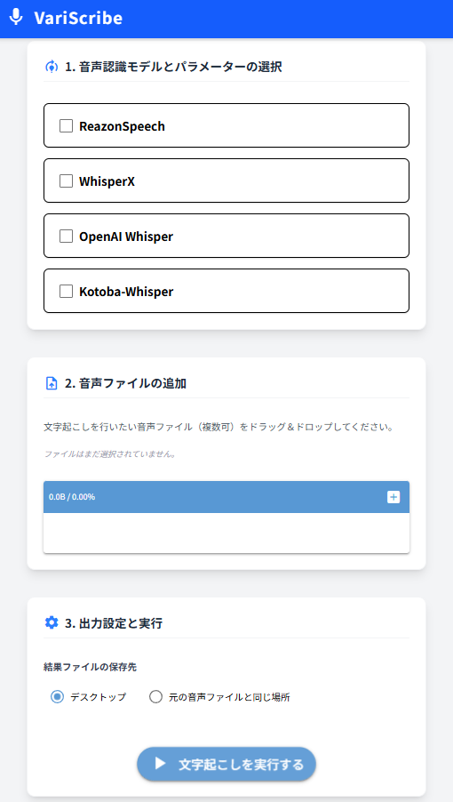
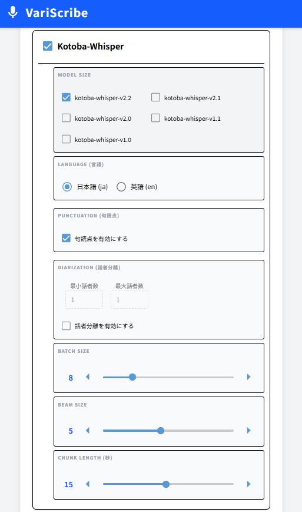

システム概要
複数の音声認識モデルを使い分けできる文字起こし用WEBアプリ。
画面イメージ
Top画面

オプション設定画面

担当工程
基本設計～リリース～保守の全工程
技術スタック
エディタ:Google AntiGravity
フロント/バックエンド:NiceGUI, Python3
スタイリング:Tailwind CSS
ソース管理:GitHub
システムの目的
複数の音声認識モデルを選べるようにする事で
使用時期毎に優れた音声認識モデルを使えるようにし
正確な文字起こしを実現可能とする。
NiceGUIの試作。
苦労した点
日本語で解説された音声認識モデルの使い方の説明ページが少なく、
細かいパラメータの調査・設定方法に苦労した事。
音声認識モデルそれぞれが同じライブラリを使用するため、
ライブラリバージョンの競合が発生し依存関係の解消に苦労した事。
良かった点
手軽に各音声認識モデルの使い分けが試せ、今使うならこのモデルのコレ!と言える様になった事。
モデルのパラメータ設定が難航する予感があったので、あらかじめStrategyパターンを導入し、依存箇所を減らした事。